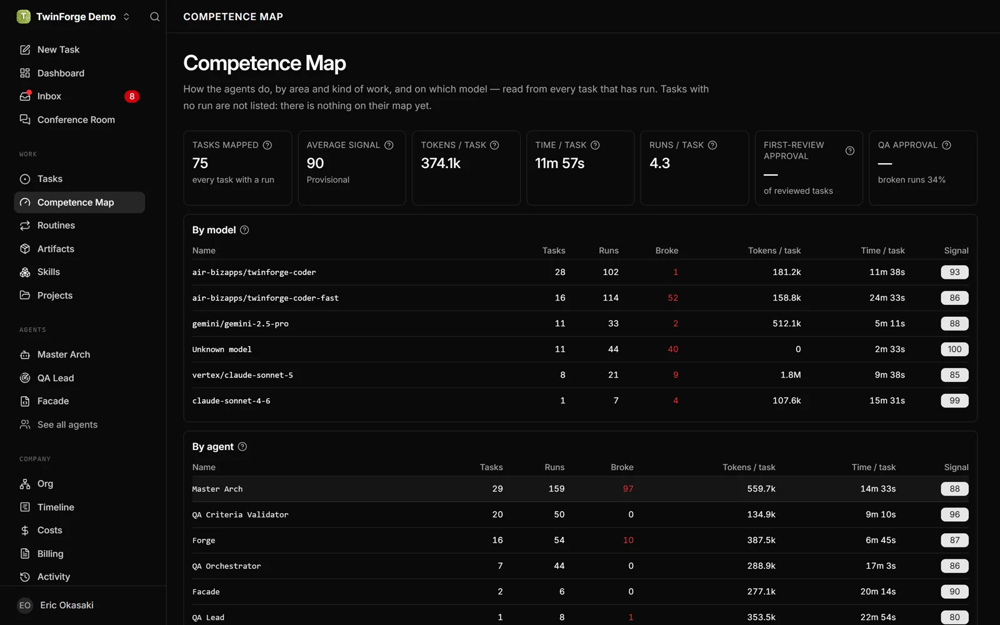
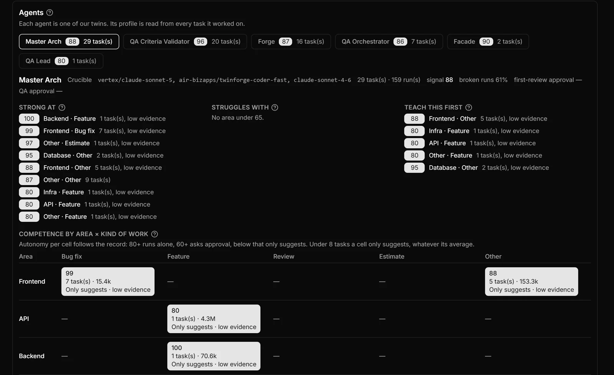
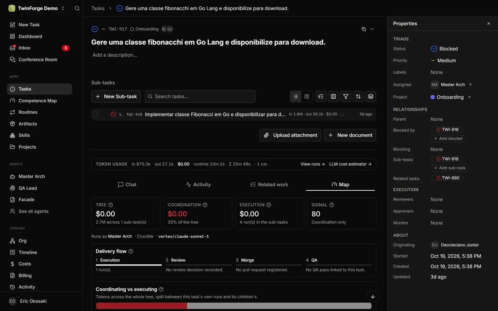
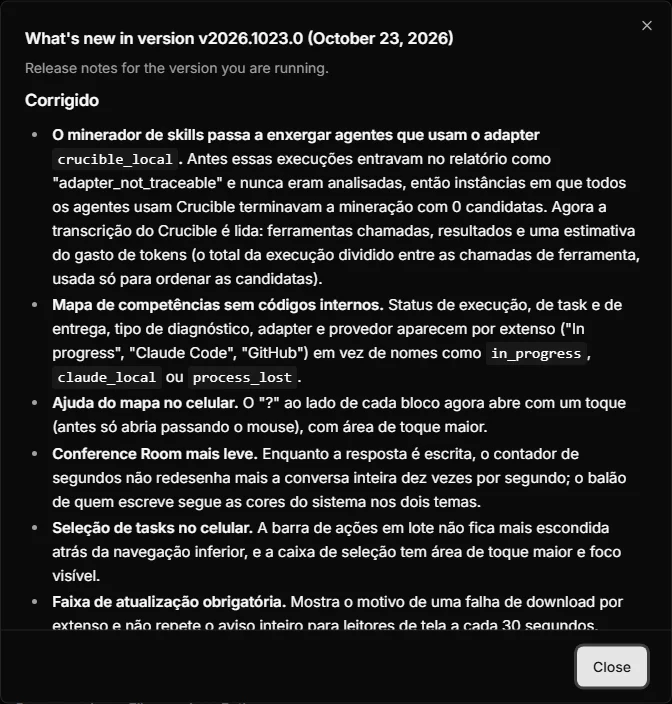

Cada tarefa vira evidência sobre quem a executou
O TwinForge já guardava runs, custos, reviews, PRs e QA de cada tarefa. Agora ele lê esse histórico de volta e diz como cada agente está indo, e o que ensinar a ele primeiro.

novo no menuCompetence Map
Uma página nova no menu, abaixo de Tasks, monta o perfil de cada agente por área × tipo de trabalho: onde ele vai bem, onde peca, o que ensinar primeiro e quanta autonomia o histórico justifica.
- Strong at: células com sinal médio de 80 ou mais.
- Struggles with: células abaixo de 65.
- Autonomia por célula: com 80 ou mais o agente roda sozinho, com 60 ou mais pede aprovação, abaixo disso só sugere. Com menos de 8 tarefas, só sugere.
- O que não foi medido aparece como
—, nunca como zero.
Onde: menu › Competence Map e a aba Map de cada tarefa

Strong at área × tipo de trabalhoUm sinal de 0 a 100, com cada desconto à vista
Na aba Map, cada tarefa mostra o fluxo da entrega, review e QA, run a run com diagnóstico, e um sinal que começa em 100 e perde pontos pelo que deu errado. Cada desconto aparece listado.
Falha de ambiente ou de fluxo não conta contra o agente. Cada sugestão tem um botão que leva a mensagem pronta para a Conference Room, onde o concierge propõe a mudança de skill ou de instruction como diff.
Também: execução comparativa da mesma tarefa com 2 ou 3 modelos

aba Map sinal 0 a 100Skill Miner: skills a partir do que os agentes repetem
O agente embutido learning lê os runs que deram certo, acha as sequências de ferramentas que se repetem e propõe uma skill para cada uma. Nada é criado sem o board aceitar.
Você escolhe período (1 a 90 dias), agentes, projeto e o orçamento de tokens da revisão. Desde a 1023, o minerador também lê agentes que rodam no adapter crucible_local.
Onde: botão Mine skills now em Skills e no cabeçalho de cada agente · CLI twinforgecli skills mine
- Lê os transcriptsRuns bem-sucedidos de tarefas concluídas e não reabertas. Agora inclui Crucible.novo
- Acha o padrãoSequências de 3 a 8 passos que aparecem em pelo menos 3 runs de 2 tarefas diferentes.
- Dá um vereditoAceito, fundido, descartado, edição de skill existente ou skill nova, sempre com justificativa.
- Abre uma tarefa com o rascunhoNo formato Agent Skills. Rascunho inválido ou com segredo é recusado pelo servidor.
- O board aceita, e a skill nasceSó num run seguinte ao aceite, e com o texto exato que foi aprovado.
Menos cliques para falar com a empresa e mexer em muitas tarefas
A Conference Room deixou de ser uma thread única por empresa. E a lista de tarefas, o Kanban e a Inbox ganharam seleção múltipla e visões salvas.
Conference Room com várias conversas
Cada conversa tem começo, histórico e URL própria, então dá para tratar dois assuntos sem misturá-los, recarregar a página e mandar o link para alguém.
- New chat abre uma sala em branco. A conversa só nasce na primeira mensagem, então entrar e sair não deixa lixo.
- Duas conversas podem ter respostas em andamento ao mesmo tempo.
- O concierge agora roda como agente do produto: o custo entra no orçamento da empresa e respeita o hard-stop.
- Respostas curtas por padrão, e o indicador de "pensando" só desiste depois de silêncio de verdade.
Onde: /board-chat/:sessionId · sempre ligada, sem flag experimental
Conversas
Ações em lote nas tarefas
Selecione várias tarefas e aplique status, prioridade, responsável, projeto, ou adicione e remova labels de uma vez, em até 100 por chamada. Na Inbox, arquivar, desarquivar e marcar como lida.
Cada tarefa passa pela mesma regra de uma edição individual. As que falham continuam selecionadas, com o motivo. Cancelar pede confirmação, porque interrompe runs ativos.
Visões salvas
Filtros, ordenação, agrupamento, modo lista ou quadro e colunas ficam numa visão com link próprio. Publique para a empresa ou guarde para você: até 50 de cada.
O "pensando" espera de verdade
Um turno real levou 209 segundos com o run saudável, e a tela desistia aos 120. Agora o limite conta silêncio: enquanto o concierge trabalha, o indicador fica.
Reset de senha pelo admin
Em Access, o admin gera um link de uso único que vale 1 hora. Quem abre define a própria senha; o admin nunca a vê.
Atualizar, segurar e voltar versão sem pedir para ninguém reabrir nada
O admin da organização e o operador da frota agora decidem quando uma máquina atualiza e para qual versão. O launcher passou a reiniciar o TwinForge sozinho para concluir a atualização.
Atualização com prazo e rollback
- Update com prazo: agora, em 4 h ou em 24 h. A máquina termina as tarefas em andamento antes de reiniciar (até 1 h).
- Roll back to manda a máquina para uma versão exata, inclusive anterior, e ela fica lá até alguém liberar. A tela mostra Held at.
- A lista só oferece versões que a máquina aceita, e uma máquina recém-ligada aparece pronta em segundos, não em 5 minutos.
- O WatchTower também pode pedir a atualização, e a faixa no app diz de onde veio o pedido.
Onde: Configurações da instância › Machines
| Máquina | Versão | Estado |
|---|---|---|
| mac-design-02 | 2026.1022.0 | Up to date |
| win-qa-07 | 2026.1021.0 | Held at 2026.1021.0 |
| linux-ci-03 | 2026.1008.0 | Update em 4 h |
O launcher conclui a atualização sozinho
O comando twinforge passou a supervisionar o servidor. Quando uma atualização termina de baixar, ele reinicia no mesmo terminal e aplica as migrações pendentes. Se o servidor cair mais de 3 vezes em 10 minutos, ele para e explica o motivo.
Ctrl-C continua encerrando normalmente, inclusive no /bin/sh antigo do macOS.
Vale depois de uma atualização comum e uma reabertura
$ twinforge TwinForge 2026.1021.0 · http://localhost:3100 ↓ versão 2026.1022.0 baixada, reiniciando para concluir servidor saiu com código 75 aplicando 2 migrações pendentes… ✓ TwinForge 2026.1022.0 · http://localhost:3100
As novidades aparecem dentro do produto
Depois do login, ou quando as notas mudam, abre um modal com o que mudou na versão em execução, com a data no título. Fechar registra a leitura por usuário, então ele não volta em outro navegador.
No instalável, o rodapé do modal mostra o estado da atualização, com o botão Atualizar. E as mesmas notas chegam ao canal de anúncios do Slack a cada deploy.
Onde: abre sozinho depois do login · menu da conta › Novidades quando há atualização pendente

versão e dataNão derruba mais a company
Uma credencial vinculada na organização fazia a company inteira falhar ao descer. Agora ela fica de fora, com um aviso, e o resto desce normalmente.
Endereço nosso para atualizar
O instalável busca atualizações em dist.twinforge.webjump.ai. O endereço antigo continua valendo para quem ainda não atualizou.
Ainda não tem o TwinForge na sua máquina?
Um comando instala e verifica a assinatura. Depois disso, as atualizações chegam sozinhas.
curl -fsSL https://dist.twinforge.webjump.ai/install.sh | shirm https://dist.twinforge.webjump.ai/install.ps1 | iex